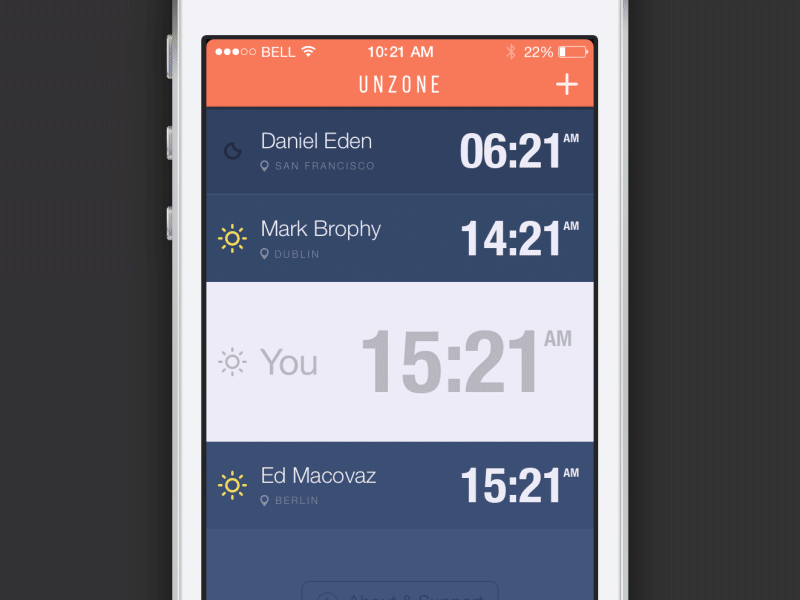
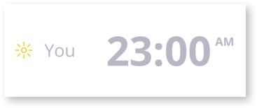

Xamarin.Forms UI Challenges - Unzone
Well thought out animations can help your applications come to life through having better user experience and a sense of joy. This Xamarin.Forms UI Challenge illustrates how simple it can be to add compelling animations into your applications.
The Design

This is a great looking design called Unzone created by Rick Waalders. The star of this design is the flip animations, which do a great job of adding personality and being functional without becoming annoying.
The key elements we will focus on in this challenge are:
- Creating a modal dialog style interaction by fading the background when a cell is clicked
- Flying in the cancel button from the bottom of the page
- Open and Close animations for the buttons on the modal dialog
- Flipping the dialog when the Delete button is clicked
- Remove a cell with a nice little bounce effect.
Basic Page Layout
If you have checked out any of my other Xamarin.Forms UI Challenges, you are probably aware that I really enjoy using a Grid as the main layout container for pages. However, this challenge requires very exacting positioning of elements so this time we opt for an AbsoluteLayout to make sure we can get the positioning correct.
AbsoluteLayout is great for very specific positioning and is pretty efficient because it doesn’t consume a bunch of layout cycles. However, it is pretty complex and you don’t get some of the dynamic goodness of managed layouts (like Grid).
Do check out the documentation, which is top notch.
The list of cells is a StackLayout with a BindableLayout.ItemsSource to create a cell for each row of data.
Cells
You may notice that there are two types of custom cells, PersonTimeCell and a YouTimeCell. To keep things simple, these two cells are defined in their own classes.
PersonTimeCell
This is the main cell that is used for the different time zones in the list. If you have a look at it, it’s a pretty simple layout which consists of a Grid of three columns and a StackLayout for the middle column.
YouTimeCell
 There is really just one of these cells and it is designed to show your current time zone.
DataTemplateSelector
What brings this all together is the DataTemplateSelector which allows us to specify which cell is used for a particular row of data. If we look at the data that is backing the cells there is a field called TimeInfoType which specifies if it’s a Person or a You type of cell.
public MainViewModel()
{
Locations = new ObservableCollection<TimeInfo>();
Locations.Add(new TimeInfo() { UserName = "Kym", CurrentTime = "10:49", Location = "Melbourne", TimeZoneId = "AEST", TimeInfoType = TimeInfo.TimeInfoTypeEnum.Person });
Locations.Add(new TimeInfo() { UserName = "Frank", CurrentTime = "14:49", Location = "Berlin", TimeZoneId = "CST", TimeInfoType = TimeInfo.TimeInfoTypeEnum.Person });
Locations.Add(new TimeInfo() { UserName = "Helen", CurrentTime = "23:00", Location = "Copenhagen", TimeZoneId = "CST", TimeInfoType = TimeInfo.TimeInfoTypeEnum.Person });
Locations.Add(new TimeInfo() { UserName = "You", CurrentTime = "23:00", Location = "Melborune", TimeZoneId = "AEST", TimeInfoType = TimeInfo.TimeInfoTypeEnum.You });
Locations.Add(new TimeInfo() { UserName = "James", CurrentTime = "11:30", Location = "Seattle", TimeZoneId = "PST", TimeInfoType = TimeInfo.TimeInfoTypeEnum.Person });
}It all kind of makes sense when you have a look at our DataTemplateSelector class.
public class TimeCellDataTemplateSelector : DataTemplateSelector
{
public DataTemplate PersonTemplate { get; set; }
public DataTemplate YouTemplate { get; set; }
protected override DataTemplate OnSelectTemplate(object item, BindableObject container)
{
// have a look at the item and return the right type of cell
if (((TimeInfo)item).TimeInfoType == TimeInfoType.Person)
return PersonTemplate;
else
return YouTemplate;
}
}And then we apply the DataTemplateSelector in our XAML via the BindableLayout.ItemTemplateSelector.
<ContentPage.Resources>
<ResourceDictionary>
<DataTemplate x:Key="PersonTimeCell">
<controls:TimeCell HeightRequest="80">
<controls:TimeCell.GestureRecognizers>
<TapGestureRecognizer Tapped="TimeCellTapRecognizer_Tapped" />
</controls:TimeCell.GestureRecognizers>
</controls:TimeCell>
</DataTemplate>
<DataTemplate x:Key="YouTimeCell">
<controls:YouTimeCell HeightRequest="160" />
</DataTemplate>
<controls:TimeCellDataTemplateSelector
x:Key="TimeCellDataTemplateSelector"
PersonTemplate="{StaticResource PersonTimeCell}"
YouTemplate="{StaticResource YouTimeCell}" />
</ResourceDictionary>
</ContentPage.Resources>
...
<ScrollView>
<StackLayout
x:Name="ViewStack"
BindableLayout.ItemTemplateSelector="{StaticResource TimeCellDataTemplateSelector}"
BindableLayout.ItemsSource="{Binding Locations}"
Spacing="0" />
</ScrollView>Okay, so that’s probably enough about how the collection of timezones is constructed. Let’s get into the fun stuff.
Popup with faded background
The design has a nice effect when the user selects one of the person cells where it darkens everything except the selected cell.
In reality, it’s very simple to achieve. The basics of it are:
-
Fade in a whole screen dark overlay over the content. This stops the user from selecting things in the background. You can set it’s
BackgroundColorto have some transparency baked in too (#CC000000) which means the user can still see the content behind it. -
Have an additional
PersonCellthat sits over the overlay which is positioned exactly where the selected cell is located. Now, set theBindingContextof the fake cell to the binding context of the selected cell so that it shows the same data.
private async void TimeCellTapRecognizer_Tapped(object sender, EventArgs e)
{
// get the cell that was tapped
selectedElement = (TimeCell)sender;
selectedIndex = ViewStack.Children.IndexOf(selectedElement);
// set the binding context to the panel
// so that it can be inherited by the FakeCell and
// any other controls required on the popup.
FrontSide.BindingContext = selectedElement.BindingContext;
// position the popups
PositionDropDown(selectedElement, FrontSide);
PositionDropDown(selectedElement, BackSide);
// fade in the overlay
FadeBackground.Opacity = 0;
FadeBackground.IsVisible = true;
_ = FadeBackground.FadeTo(1, animationSpeed);
...
}Animating the Close Button
Another really nice effect is the Close button that pops in from the bottom when a cell is selected.
This is really just a case of positioning the close button relative to the selected cell and then doing some animations to adjust it’s Position, Rotation and Opacity.
...
// position the close button
var padding = 40;
var xPos = (this.Width / 2) - (CloseButton.Width / 2);
var yPos = selectedElement.Bounds.Y + FrontSide.Bounds.Height + padding;
var closeButtonRect = new Rectangle(xPos, yPos, CloseButton.Width, CloseButton.Height);
AbsoluteLayout.SetLayoutBounds(CloseButton, closeButtonRect);
...
AnimateCloseButton(CloseButton, entering:true);
...The entering and exiting animations vary slightly which is why it passes in an parameter into the AnimateCloseButton method.
private void AnimateCloseButton(VisualElement elementToTransform, bool entering)
{
var startingTranslation = entering ? 100 : 0;
var endingTranslation = entering ? 0 : 100;
var translationEasing = entering ? Easing.SpringOut : Easing.SinIn;
var startingOpacity = entering ? 0 : 1;
var endingOpacity = entering ? 1 : 0;
var startingRotation = entering ? -90 : 0;
var endingRotation = entering ? 0 : 180;
elementToTransform.TranslationY = startingTranslation;
elementToTransform.Opacity = startingOpacity;
elementToTransform.Rotation = startingRotation;
elementToTransform.FadeTo(endingOpacity, 500);
elementToTransform.RotateTo(endingRotation, 700, Easing.SinInOut);
elementToTransform.TranslateTo(0, endingTranslation, 600, translationEasing);
}Really the only interesting part of this is that it uses the animation extension methods which Xamarin.Forms provides, namely FadeTo, RotateTo and TranslateTo. These are awaitable methods, but if you don’t await them, you can kick of multiple animations that run at the same time.
You might notice that we always position the close image beneath the fake cell, which is mostly fine for the purpose of this UI Challenge, but in reality you and your designer would probably have to think about this a little more. What happens when when the selected cell is at the bottom of the screen?
Folding down the buttons
Even though the folding down buttons are a little gratuitous they add a bit of personality to the app. The key behind this effect is to adjust the rotation of elements so that they appear to fold down.
Rotation can be done on the X, Y and Z axis
An important thing to know about rotations is that they happen around the AnchorX and AnchorY of the element. Think of the the Anchor as the rotation point.
<Grid
x:Name="DeleteDropDown"
Grid.Row="1"
Grid.Column="0"
AnchorY="0"
BackgroundColor="{StaticResource DropDownColor1}"
HeightRequest="80">The default value for AnchorX is .5 which means the middle (but not important for what we are doing). The important thing is to have the AnchorY to “0” which means that the rotation is going to happen around the TOP of the element.
Step 1: Set the starting state
...
// hide the dropdowns
DeleteDropDown.IsVisible = false;
EditDropDown.IsVisible = false;
InfoDropDown.IsVisible = false;
...
await OpenDropDown(DeleteDropDown);
await OpenDropDown(EditDropDown);
await OpenDropDown(InfoDropDown);
...You might notice that in the code above we are doing an await on the OpenDropDown method. This is basically saying wait (without blocking the main UI thread) until the previous dropdown has finished. If we didn’t have that, then they would all animate in at the same time and we would lose of staggered effect.
Step 2: Animate that puppy
When animating in with the OpenDropDown method we start by setting it’s initial Visibility, RotationX and Opacity.
The fold down animation is actually a Fade and a RotationX. In the below code you can see that the FadeTo is NOT awaited which means it will happen at the same time as the RotateXTo happens. It’s a small detail, but what I have learnt about design is that it’s all about the small details.
private async Task OpenDropDown(View view)
{
view.IsVisible = true;
view.RotationX = -90;
view.Opacity = 0;
_ = view.FadeTo(1, animationSpeed);
await view.RotateXTo(0, animationSpeed);
}Closing the drop down is effectively the reverse. Start it fading, wait for it to rotate, and then set it invisible.
private async Task CloseDropDown(View view)
{
_ = view.FadeTo(0, animationSpeed);
await view.RotateXTo(-90, animationSpeed);
view.IsVisible = false;
}Flipping the dialog
Creating a flip effect consists of having a from and to view.
- Rotating the
fromview around the middle of it’s Y axis until you are looking at it’s edge. (effectively invisible) - Swapping to the
toview (also rotated) - Rotate the
toview around it’s middle so that it comes into view.
It’s simpler than it sounds:
private async Task Flip (VisualElement from, VisualElement to)
{
await from.RotateYTo(-90, animationSpeed, Easing.SpringIn);
to.RotationY = 90;
to.IsVisible = true;
from.IsVisible = false;
await to.RotateYTo(0, animationSpeed, Easing.SpringOut);
}As a bonus you might notice there is a nice little SpringIn and SpringOut easing to give it a little bounce.
Bouncing up the items
The final effect that is worth mentioning in this UI Challenge is the bounce animation for deleting an item from the list. I’ll admit this is a little hacky but seems to work quite nicely (just don’t try it with thousands of elements)
The basic idea is:
- Close down the overlays.
- Iterate through all the items after the selected element
- Create an animation to move it to location of the previous element with a bounce easing
- Wait for all those animations to finish
- Remove the selected element
private async void YesButtonTapGestureRecognizer_Tapped(object sender, EventArgs e)
{
// close the overlays
await Flip(BackSide, FrontSide);
CloseDropDown(EditDropDown);
await CloseDropDown(DeleteDropDown);
// fade out the overlay background
await FadeBackground.FadeTo(0, animationSpeed);
FadeBackground.IsVisible = false;
// go through all the elements after the selected item
// and translate them up to overlap the element before
List<Task> animations = new List<Task>();
for (int i = selectedIndex + 1; i < ViewStack.Children.Count; i++)
{
VisualElement elementToMove;
elementToMove = ViewStack.Children[i];
// work out the bounds we are going to move them to
var boundsToMoveTo = elementToMove.Bounds;
boundsToMoveTo.Top -= selectedElement.Height;
animations.Add(elementToMove.LayoutTo(boundsToMoveTo, animationSpeed, Easing.BounceOut));
}
// wait for all those elements to move
await Task.WhenAll(animations);
// fade out and then remove the selected
await selectedElement.FadeTo(0, animationSpeed);
ViewStack.Children.Remove(selectedElement);
}BTW, the reason for the FadeOut before removing the element is really just in case you are deleting the last element in the list.
Summary
Okay, so that’s the key elements in this UI Challenge. It was definitely a fun UI to put together, and not too difficult when you break it apart into it’s elements. Mostly it’s smoke and mirrors but it doesn’t provide a great looking UI.
Get the code
All the code is available open source on my github.
Watch me code it
I actually did this UI Challenge live over Twitch, so if you want to watch hours of me coding this up then check out these recordings.
Part 1
Part 2
If you want to catch me doing other live coding things follow me on Twitch. It’s a great platform where we can chat as we build software, ask questions, submit code). Follow me at https://www.twitch.tv/kymphillpotts and come join in the fun!

If you can’t make it to the Twitch streams, then I also upload the videos to my YouTube Channel
I hope these posts are useful for you, feel free to leave me a comment below or reach out to me via Twitter.
Until next time, Happy Coding
❤ Kym